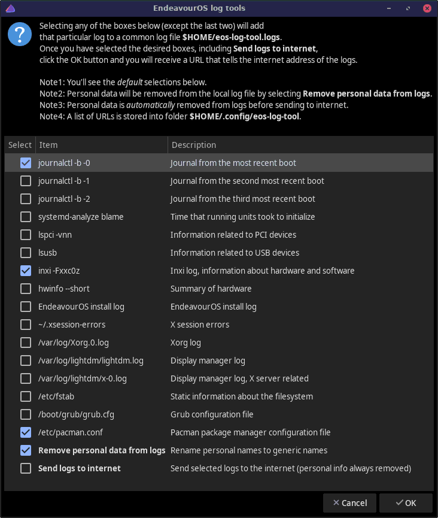

A GUI tool for copying various system logs to the internet.

If a user wants help in troubleshooting an issue, with this tool user
can share logs for other users to see e.g. on the EndeavourOS forum.
Note that without logs and/or other system information troubleshooting
can be practically impossible.
This tool aims to hide all personal information from the logs that
will be sent to the internet when the
Remove personal data
from logs is selected.
If Send logs to internet is selected, then the logs
will be sent to the internet, and an URL is returned after a
successful send.
This URL is the thing to share with others
that help troubleshooting the issue.